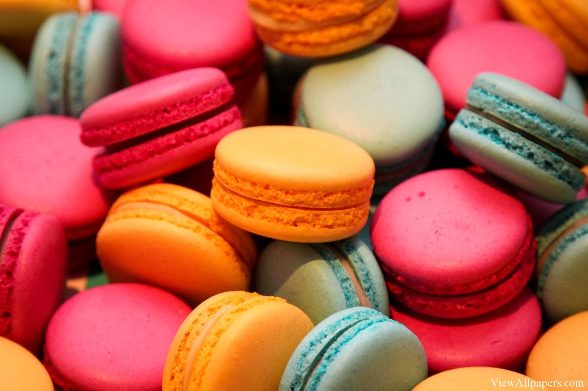
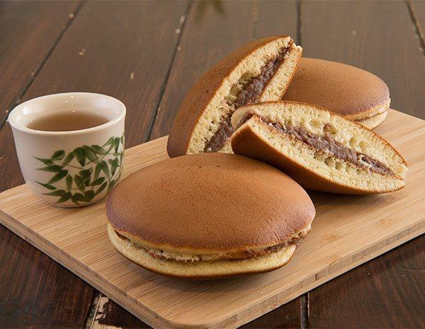
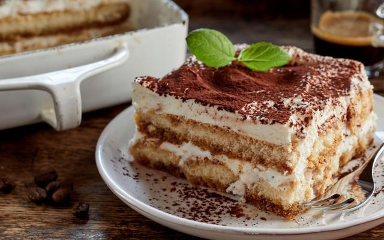
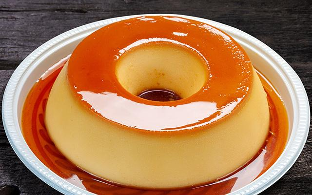

Itens do cardápio
Página dedicada à apresentação de doces tradicionais internacionais, destacando sua origem, cultura e características únicas.
Macaron
Doce francês delicado feito com duas camadas crocantes de massa à base de amêndoas, recheadas com ganache, creme ou geleia em diversos sabores.

Dorayaki
Sobremesa tradicional japonesa composta por duas massas fofinhas semelhantes a panquecas, recheadas normalmente com pasta doce de feijão azuki.

Tiramisu
Clássica sobremesa italiana feita com camadas de biscoito embebido em café, creme de mascarpone e cacau em pó.

Pudim
Sobremesa cremosa muito popular no Brasil, preparada com leite condensado e coberta com uma calda caramelizada suave e brilhante.
